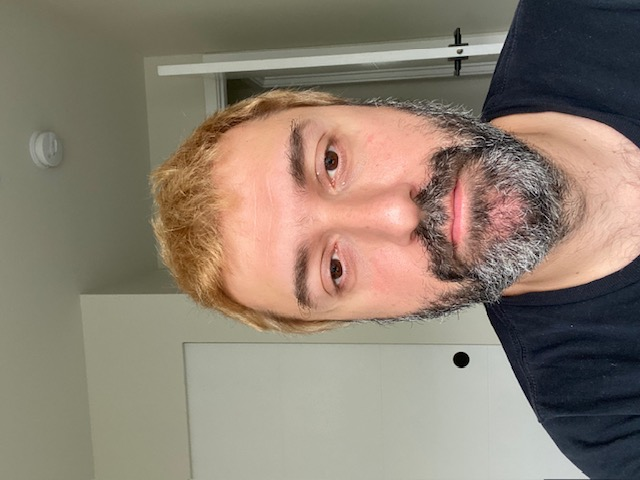

Elias Derian

Summary
I am 40 years old and i have over 14 years of experience in hospitality. I decide to move to web developement becuse i was burnt out by night life and its not sustainable. After i tried the web developement i fel in love and i decided to switch carrer.
Eductaion
- High School diploma - Sacre-Coeur - Beirut, Lebanon (2003)
Work Experience
-
Ba Bar South lake Union, General Manager. (July 2021-December 2022)
- successfully managed a team of 20+ employees.
- Identified and resolved issues raised by customers.
Elemental Pizza, General Manager.(March 2021-July 2021)
- Recruited, hired, trained, and coached staff fro a new restaurant.
- Maitained budgeted monthly food cost and labor as outlined in the budget.
Skills
- Highly organized with the ability to multi-task.
- Strong organizational skills.
Others